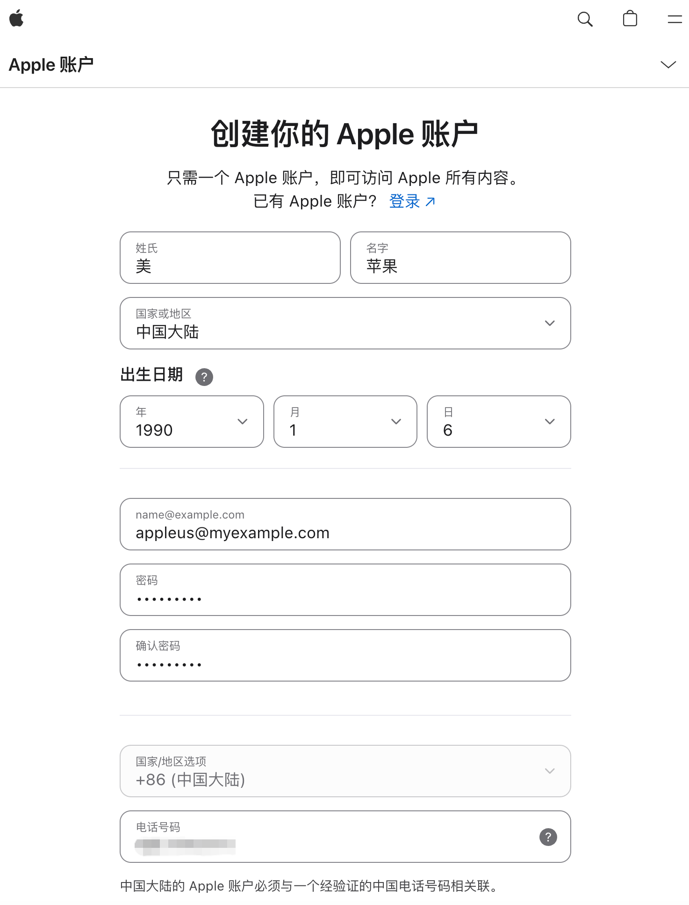
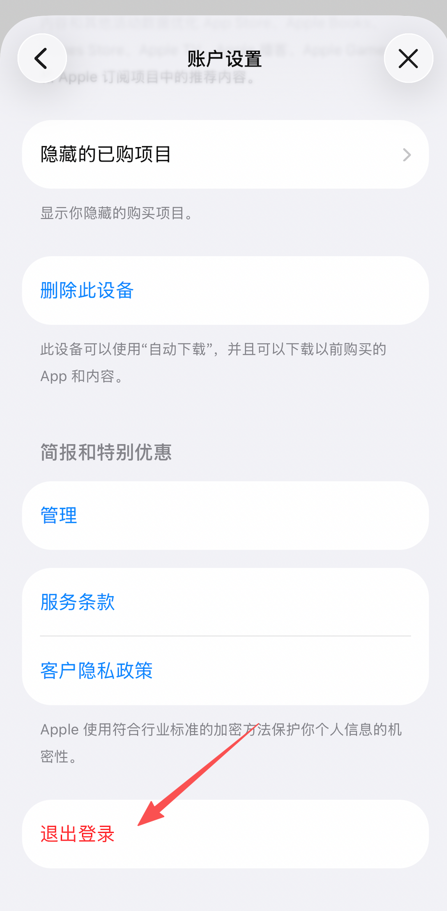
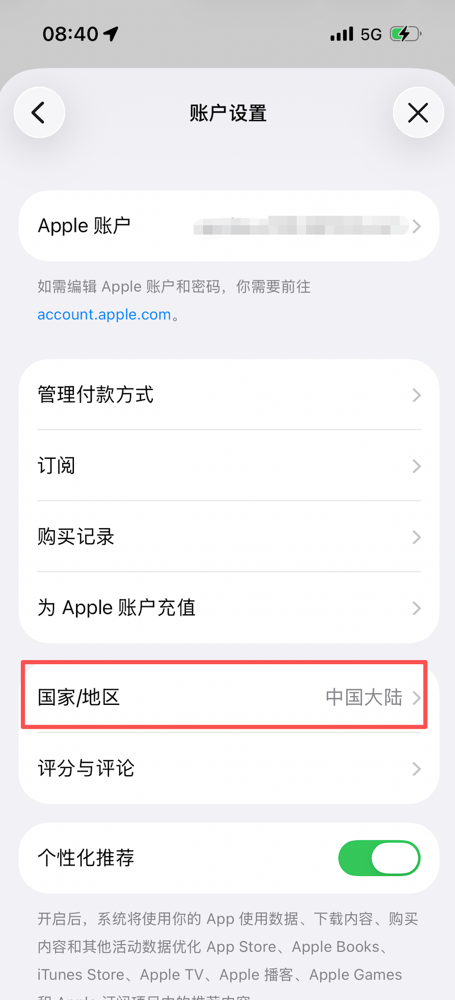
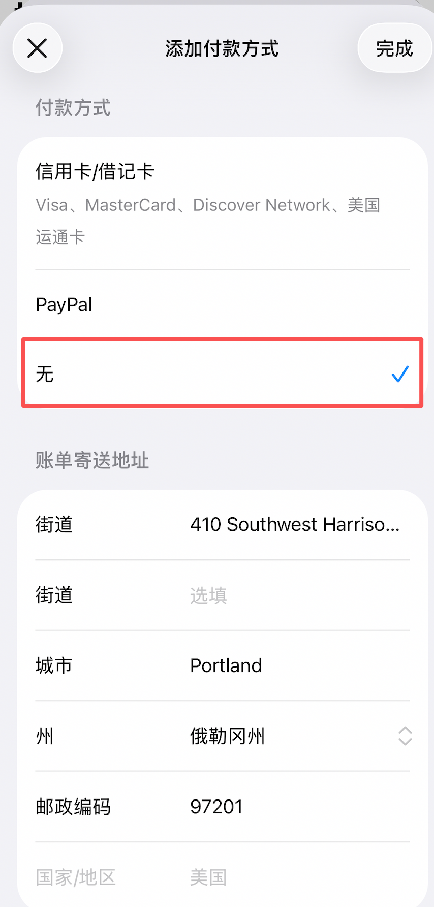
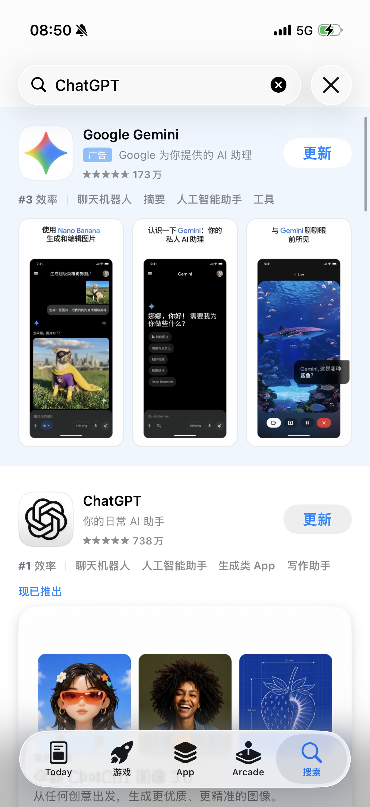
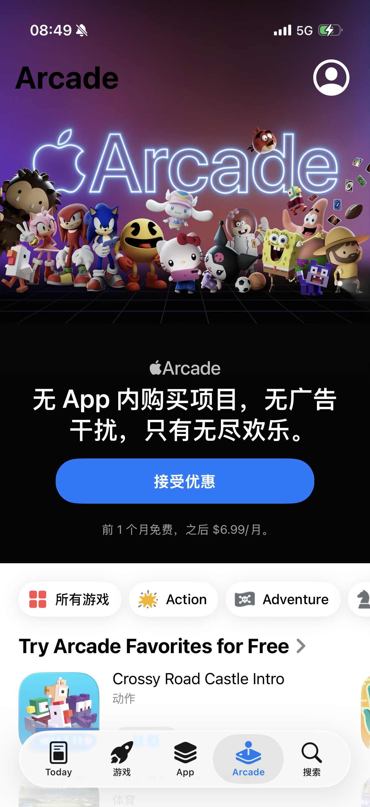

最近 Codex 已经支持远程控制了，但 ChatGPT App 在国区还是没有上架。类似 Gemini 这种应用，在国区 App Store 里也不太好下。
如果你用的是 iPhone，那准备一个美区 Apple 账号，基本就成了绕不过去的事。
我这次用下来，比较省事的一条路不是直接注册美区账号，而是先搞一个全新的国区账号，再把地区切到美国。这样至少不用一上来就想办法找美国手机号接码，整体会顺不少。
先说两个前提：
- Apple 这类策略变得挺快的，今天能走通，不代表之后一直都能走通。
- 最好直接用新号折腾。老号如果挂着订阅、余额或者购买记录，换区的时候往往会很麻烦。
Apple 账号注册地址：
https://account.apple.com/account
先注册一个新的国区账号
不要一开始就直接选美国地区注册。现在如果这么干，很多时候会要求你用美国手机号验证，门槛一下就上去了。
所以更稳一点的办法，是先正常注册一个国区账号，用自己的手机号完成验证。

在 iPhone 上登录这个新账号
注册完之后，打开 iPhone 上的 App Store，点右上角头像进去。
先把当前正在用的账号退出掉，再登录刚注册的这个新账号。

登进去之后可以先看一眼区域，这时候正常还是中国区。

再把地区切到美国
这一步才是关键。
切之前，一定注意要让手机全局翻墙到美国 IP，然后再进入账号设置里的“国家/地区”，把地区改成“美国”。
这里最重要的是“付款方式”这一项。如果你能看到“无”，直接选“无”就行，这样就不用填信用卡或者 PayPal 了。
如果没有看到“无”，那就表明你的 IP 还没翻到美国，可以检查下当前的网络，不行重启试试。

另外有几个细节也顺手注意一下：
- 账单地址可以找个美国地址生成器随便生成一个能用的。
- 最好选免税州，比如俄勒冈州，后面真要付费会省一点事。
- 名字也尽量写成英文，能少掉一些奇怪的校验问题。
把这些都填完保存，如果没报错，基本就已经切到美区了。
看下是不是已经变成美区了
切完以后再回到 App Store 搜一下，一般就能看到国区里没有的应用了，比如 ChatGPT 和 Gemini。

像 Apple Arcade 这种内容，这时候通常也已经能看到了。

顺便说一句，应用下载的时候一般不需要一直全局代理，所以也不用太担心流量问题。
最后补几句
- 这个美区账号的密码一定要记好，后面更新应用时大概率还会让你重新登录。
- 这种口子什么时候被 Apple 收紧不好说，能注册的时候尽早注册。
- 如果你只是为了下载少数几个应用，平时把主账号和这个外区账号分开用，会省心很多。
如果你的目的就是装个 ChatGPT、Gemini 之类的应用，这套办法现在看下来还是比较直接的。